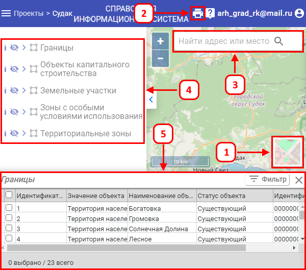

Страница «Карта» – это основная страница работы с проектом. На ней доступны функции редактирования слоёв. Также, на данной странице, можно визуализировать каждый из слоёв, проверить их на ошибки и сформировать gml-файл.
